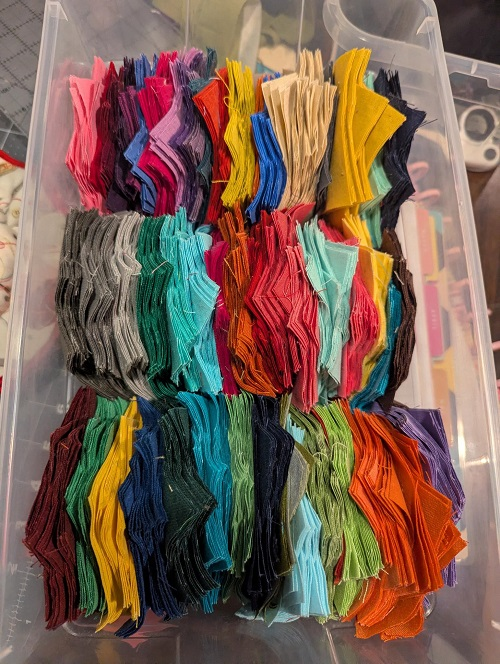

SMiLE Butterfly
Started: 2026
Status: In progress
This is one of my Leader's and Ender's projects mostly because of my short attention span. All of the piecing for it I do while sewing other projects. Same with the cutting out of the butterfly wings and ironing.
It is 100% inspired by the Butterfly Effect quilt by Lynn Carson Harris. Whose work I stumbled on when looking up some inspo for what to do with my tiny scraps (around 1")
When working on it I can't help but think of that old DDR song Butterfly by SMiLE.kd particularly the 'green, black, and blue make the colors of the sky'. I tell myself it's fitting since I have different colored solid scraps as the sky including green and blue of course to set to the different pattern scraps of the butterfly wings.
My goal is to have one butterfly made of every fabric I have which would be over 350; which I'm not sure if I will have enough unique fabrics but I'mma worry about that hurdle when I come to it.
The only thing I've batched prepped for it is the background squares. Each butterfly block needs 2 triangles of print and 4 of the same color solid fabric. Cutting out the solids made a sizable dent in my stash and I really haven't used them since I shut down my bow tie shop. I would have had a lot more if I included the various shades of black I've accumulated over the years but I'm planning on doing a moth version of the quilt so setting the darkest grays and blacks aside for now.
